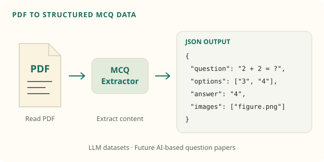

DATA CREATION
mcq-extractor
Extract multiple-choice questions from PDFs into structured JSON containing questions, options, answers, and images. Built to support dataset creation for LLMs and future AI-based question paper generation.
View repository